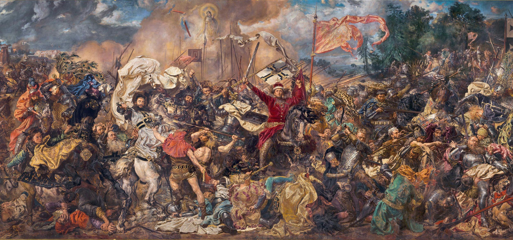

Bitwa pod Grunwaldem odbyła się 15 lipca 1410 roku. Była jednym z największych starć zbrojnych średniowiecznej Europy. Wojska polsko-litewskie odniosły w niej zwycięstwo nad zakonem krzyżackim. Wydarzenie to zapisało się na stałe w historii Polski i Litwy.
Przyczyną konfliktu były wieloletnie napięcia między Królestwem Polskim i Wielkim Księstwem Litewskim a zakonem krzyżackim. Krzyżacy dążyli do rozszerzenia swoich wpływów nad Bałtykiem. Ważnym przedmiotem sporu była również Żmudź, leżąca na terenie dzisiejszej Litwy.
W 1409 roku wybuchła wielka wojna między Polską i Litwą a zakonem krzyżackim. Konflikt doprowadził do decydującego starcia pod Grunwaldem.
Król Władysław Jagiełło i wielki książę litewski Witold przygotowali wspólną wyprawę przeciwko Krzyżakom. Wojska polskie i litewskie połączyły swoje siły, aby wspólnie stawić czoła zakonowi.
Armia polsko-litewska wyruszyła w kierunku ziem krzyżackich. Celem wyprawy było osłabienie przeciwnika i zdobycie jego najważniejszych ośrodków.
Do bitwy doszło 15 lipca 1410 roku na polach w pobliżu wsi Grunwald, Stębark i Łodwigowo. Po jednej stronie walczyły wojska polskie i litewskie, a po drugiej armia zakonu krzyżackiego.
Walki były bardzo zacięte. Wojska litewskie początkowo wycofały się z pola bitwy, natomiast oddziały polskie kontynuowały walkę z Krzyżakami. Ostatecznie wspólne siły polsko-litewskie pokonały armię zakonną.
Władysław Jagiełło – król Polski, który dowodził wojskami polskimi.
Witold – wielki książę litewski, który dowodził wojskami litewskimi.
Ulrich von Jungingen – wielki mistrz zakonu krzyżackiego, który zginął podczas bitwy.
Bitwa zakończyła się zdecydowanym zwycięstwem wojsk polsko-litewskich. Zginął wielki mistrz zakonu krzyżackiego oraz wielu ważnych dowódców. Krzyżacy ponieśli ogromne straty.
Zwycięstwo pod Grunwaldem poważnie osłabiło militarną potęgę zakonu krzyżackiego. Miało również duże znaczenie polityczne i wzmocniło pozycję Polski i Litwy w Europie.
Mimo zwycięstwa wojna nie zakończyła się całkowitym zniszczeniem państwa zakonnego. W 1411 roku zawarto pokój w Toruniu.
Bitwa pod Grunwaldem jest jednym z najważniejszych wydarzeń w polskiej historii. Stała się symbolem odwagi, jedności i współpracy Polaków i Litwinów.
Do dziś organizowane są uroczystości rocznicowe oraz rekonstrukcje historyczne, które przypominają o tym wielkim zwycięstwie.
Bitwa pod Grunwaldem była przełomowym wydarzeniem w dziejach Polski i Litwy. Zwycięstwo nad zakonem krzyżackim zapisało się w historii jako symbol siły i współpracy obu państw.
© 2026 Historia Polski